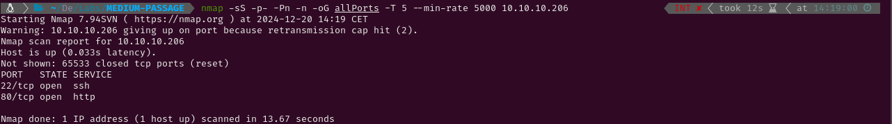
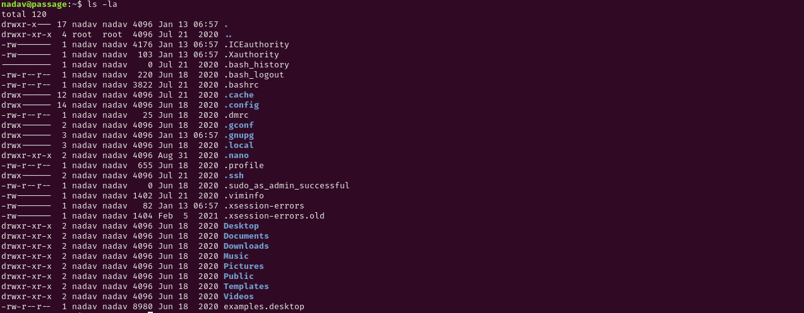

MEDIUM - PASSAGE
1. Recon
Nmap
nmap finds two open ports: SSH (22) and HTTP (80).

The NSE (Nmap Scripting Engine) finds the following information:
- The box is using Ubuntu
- The version of the SSH service is 7.2p2
- The port 80 HTTP server is using Apache 2.4.18 and the title suggests it is a news website.

Website - TCP 80
Visiting http://10.10.10.206/ a website with news is shown.
Running gobuster to find hidden files and directories will quickly start throwing errors. This is related to the first entry of the webpage which says ‘Implemented Fail2Ban’. This is a daemon which monitors the logs and bans clients that make a lot of bad requests. It can be configured to protect a website against enumeration and brute force attacks among others.

2. Gaining Access
At the bottom of the page there is a footer which says ‘Powered by CuteNews’. This technology is a news management system which belongs to CutePHP. Looking up ‘CuteNews exploits’ I have discovered a few which seem interesting. The first one is a Remote Code Execution exploit. While reading it, I have learnt that there should be a lines file which contains information about registered users in {ip}/CuteNews/cdata/users/lines, so following that url I get some base64 encoded strings.

I will write a quick bash script to save and decode the information. Running it prints the decoded information and although it is a bit difficult to read, some usernames, emails and hashed passwords can be retrieved from it. Using CrackStation two passwords are found. The found usernames are: admin, sid-meier, paul-coles, egre55 and kim-swift. The found credentials are egre55:egre55 and paul-coles:atlanta1. Both are valid to log in.


Once I hace access to a user, I can visit the edit Personal Options section and upload a php reverse shell which sends a shell to my netcat listener.


3.Privilege Escalation
Paul
The password I used to log in as paul in CuteNews is valid to change user within the system.

Nadav
Checking the authorized keys file in the /home/paul/.ssh directory, a key for nadav@passage can be found. I will copy the file id_rsa to my linux and use it to login as nadav in the system.


Root
Checking the content of the home directory of nadav a file called .viminfo can be found. This file contains information about the operations that have been made with vim. This includes the list of files which have been recently modified. Between those, the file com.ubuntu.USBcreator.conf seems interesting as it belongs to USBcreator, a software application designed to create bootable LiveUSBs.


While checking if this application is vulnerable, I have come across a Palo Alto page which explains how to exploit this software to escalate privileges. First I have obtained a hash for the password ‘admin’ using OpenSSL. After doing this, I have copied the file /etc/passwd to /tmp and modified the copy so the password for the user root is ‘admin’.


Now that the modified passwd file is ready, it is time to substitute the original one with it. This is where the USBCreator application is exploited using gdbus.

Now that the file is changed, I can log in as root using the password ‘admin’ and now I can read root.txt and submit the flag.